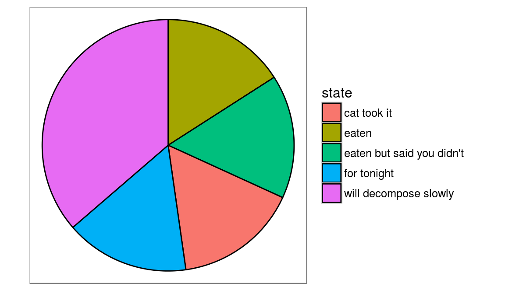
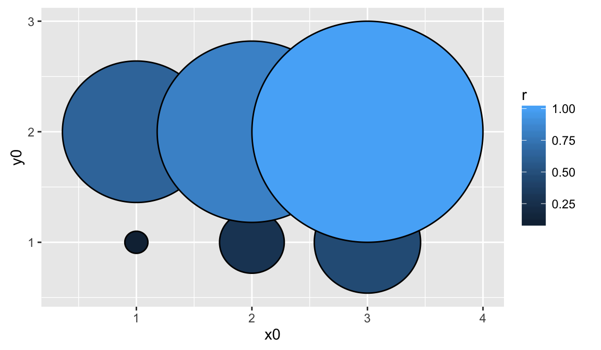

https://github.com/thomasp85/ggforce
ggforce is aimed at providing missing functionality to ggplot2 through the extension system introduced with ggplot2 v2.0.0.
# Example from https://github.com/thomasp85/ggforce
library(ggplot2)
library(ggforce)
# We'll start by defining some dummy data
pie <- data.frame(
state = c('eaten', 'eaten but said you didn\'t', 'cat took it',
'for tonight', 'will decompose slowly'),
focus = c(0.2, 0, 0, 0, 0),
start = c(0, 1, 2, 3, 4),
end = c(1, 2, 3, 4, 2*pi),
amount = c(4,3, 1, 1.5, 6),
stringsAsFactors = FALSE
)
p <- ggplot() + theme_no_axes() + coord_fixed()
# For low level control you define the start and end angles yourself
p + geom_arc_bar(aes(x0 = 0, y0 = 0, r0 = 0, r = 1, start = start, end = end,
fill = state),
data = pie)
# Here are some data describing some circles
circles <- data.frame(
x0 = rep(1:3, 2),
y0 = rep(1:2, each=3),
r = seq(0.1, 1, length.out = 6)
)
ggplot() + geom_circle(aes(x0=x0, y0=y0, r=r, fill=r), data=circles)